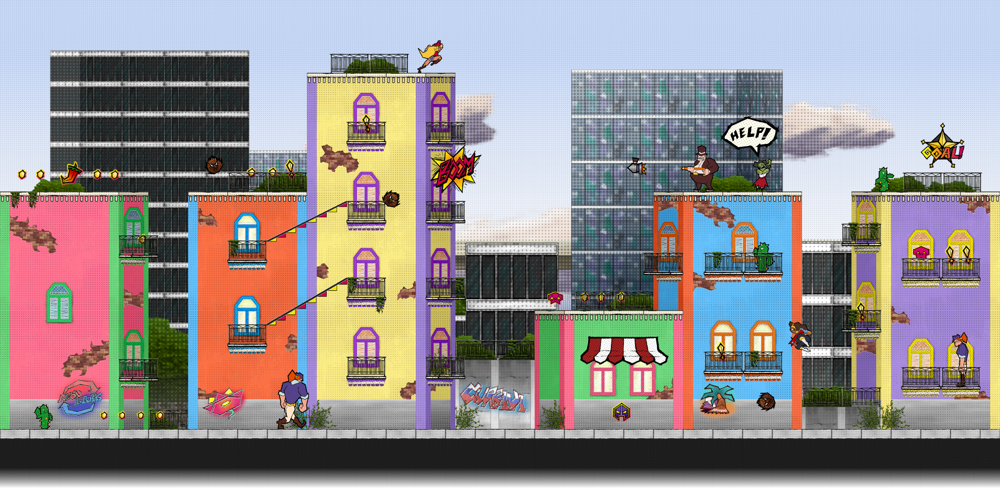

Cursed Cove
Professional
Apr - Oct 2018
A Team Fortress 2 map developed by a team of 12, bought and featured by Valve Software in the Halloween 2018 event.
Scarlet Meadow
Academic/Personal
Feb - May 2020
A 2D platformer, beat-em-up with hand-drawn animation and a custom level editor tool, all built in C# and Monogame.
Queen Elizabeth III in "A Royal Pain in the Arse"
Personal
Feb - Apr 2018
Traditional, hand-drawn animated characters brought into a Team Fortress 2 map as a boss fight.
Neon Pong
Academic/Personal
Apr - May 2019
A side-scrolling, back-and-forth, singleplayer fighting game developed using Java, built-in Java libraries, and hand-drawn animation.
Neon Heights
Personal
Feb 2019 - Current
A local and online multiplayer game currently being developed in Unity.
"2019 Sketch Collage"
, Pencil converted to digital, 2019"Cartoons in the City"
, Gouache, May 2018"Fruitful of Flavor"
, Oil, Dec 2017"Pepper and Olive Oil"
, Pencil, Dec 2017"Almonds in a Jar"
, Pencil, Dec 2017"Imperfect City"
, Pen and Ink, Jan 2018"Steam City"
, Red Pen, Oct 2018"Epic Space Monkeys"
, Pencil drawing, digital painting, Nov 2019"Jet from Lethal League Blaze"
, Pencil drawing, digital painting, Aug 2019Pl Sleepers
Nov 2018 - Current
An experiment with very angular geometry and a big city aesthetic in Team Fortress 2. I have been working on the map on and off in my free time, it is not yet playable. The name "Sleepers" has no meaning, it was based off of some music I was listening to at the time.
MvM Havana
May - July 2017
Collab with Jess "Muddy" Dabbs, a Team Fortress 2 map set in Havana, Cuba. Players must fight off waves of invading robots. We wanted to see how Cuban architecture could fit into the TF2 art style.
De Chug
Dec 2017 - Current
A Counter Strike: Global Offensive map with wacky angles and more complicated routes and sites than normal maps. For instance, the B site is stacked, meaning players can plant on the top or bottom, which I have not seen been done for a bombsite. The map is playable and I work on it whenever my friends and I feel like playtesting it.
Cursed Cove
Professional, April - October 2018
In a team of 12, I helped developed the map "Cursed Cove" for Valve Software's "Team Fortress 2". The map was bought and featured by Valve as a part of the Halloween "Scream Fortress" event in 2018. On the team, I contributed concepts for the level design, and I developed parts of the background/skybox of the map. In the map, players must kill other players to collect their souls, and then must deliver those souls to Davy Jones' Locker.
Design Concepts
During pre-production of the map, I contributed ideas for possible building shapes, locations on the map, and gameplay concepts. In order to create the feeling of a "bustling pirate bay" our buildings were made very tall with lots of cramped, narrow alleyways in between.
Design sketches of possible gameplay areas, and early art style and texture palette developement.
Background and Skybox Detailing
When the playable area of the map was nearly complete, some teammates and I started working on the out-of-bounds areas. While the playable area was symmetrical between the two teams, RED and BLU, the out-of-bounds areas would be asymmetrical to appear more visually interesting. I helped develop the jungle/forest area behind RED's base, as well as the cobble fortress behind BLU's base. This perfectly blended Team Fortress 2's tropes of RED using lots of natural, wooden materials, and BLU using lots of industrial materials for their bases with an old-timey pirate theme. While much of BLU's fortress was scrapped in the final product due to optimization concerns, it still helped us understand the visual style were we aiming for.
Early versions of the skybox, and the final versions of the skybox.
The Result
Watch the trailer and view the map on the Steam Workshop! The map is also available to play on official Team Fortress 2 servers every year during the Halloween event!
Scarlet Meadow
Academic/Personal, February - May 2020
Scarlet Meadow is a 2D platformer, beat-em-up game with traditional, hand-drawn animation, developed in C# and Monogame. I worked with a team as the lead artist, but I also developed the physics system for objects in the game, enemy behavior, UI elements, and I designed and developed a robust, graphical level editor using for content production for the game. The game features traditional, hand-drawn animation with inspiration from comic books and Cuban architecture.
Physics and Interactivity
Many of the elements of Scarlet Meadow are physically interactive, meaning that a robust physics system that also responded well to the player's inputs was needed. I developed a physics system that has velocity, air resistance, and collision detection using axis-aligned bounding boxes. The collisions could be customized to be solid, semi-solid (meaning a platform the player can jump through), or triggers for certain events. In terms of interactive elements, I developed ziplines, trampolines, Scarlet's lasso attack which shoots out a lasso that grabs onto anything it touches and then comes straight back to the player, enemy behavior, linear and bouncy projectiles, collectible items, stage objectives, and much more.
The Scarlet Editor and Level Design Pipeline
"Scarlet Meadow" features 16 unique levels all designed by me. Each level only takes about 2-3 minutes to complete, but they are tough, meaning that new players will be retrying each one until they master them all. In order to build all 16 levels, a powerful level editor tool was needed. Inspired by Valve Software’s "Hammer Editor" and Super Mario Maker’s "Course Editor", "The Scarlet Editor" gives the user full control of their levels, letting them paint tiles of collision data, place props, enemies, items, and change properties of the level such as the background or level objective. The editor also has some quality of life features, such as being able to zoom in and out with the scroll wheel, pan around by clicking and dragging, and more. Stages are stored in ".scar" (Scarlet) files, which, when directly loaded into the game, will optimize the collision mesh and let the user play their level. I developed all of these systems in about 3 weeks.
Traditional, Hand-Drawn Animation with Comic Book Flare
I conceptualized and originally designed the Scarlet Meadow character back in 2017, but as my own art style has changed and improved since then, so has the design of the character. For use in this full game, I fleshed out the overall world by adding more characters, such as Scarlet's friend Cocoa Cavero, the cactus civilians, and enemies like the Lawmakers and Robberbarons. All of the characters for this game are hand-drawn and inked on physical paper, and then scanned in to be colored digitally. This method gives the animation its hand-drawn charm, but the actual style, inpired by pop art, street art, and comic books, is angular, colorful, and bold. As with my previous project, "Neon Pong", I applied a halftone filter to everything, which was a quick and affordable way to give some much needed texture and comic book flare to the otherwise flat graphics.
"Curbana" and Environmental Design
The game takes place in "Curbana", a fictional urban environment of skyscrapers mixed with colorful, Cuban inspired architecture. The props scattered throughout the levels are designed to give the levels a bit of depth in a 2D setting, while also making sure that characters, items, and interactive objects all share a bold, black outline that pops out to players' eyes.
The Result
The game is complete with 16 tricky levels, fun physics, and eye-catching graphics. You can watch the trailer and download the game and level editor below!
Download the game and level editor


Queen Elizabeth III in "A Royal Pain in the Arse"
Personal, February - April 2018
A Team Fortress 2 map that makes players fight against my own 1930's style animated characters, play minigames for power-ups, and take control of the center control point, all released on April Fools as a "joke styled map". I was inspired by Studio MDHR's 2017 game, "Cuphead", with its own 1930's aesthetics and jazz soundtrack. This was the first time I had done a large scale project based on hand-drawn animation. This project was done solo.
A New, Old-Timey, Concept
No one had really done a map with hand-drawn animated characters before, at least not to the same scope that I was going to attempt, meaning I was on my own to figure out how it should work. With hard limits on how much I could push the Source Engine to my will, I brainstormed many ideas on how to accomplish my goal. I thought of using 3D models with animated textures, but that was beyond my skillset at the time. I also thought of having tons of brushes, each one with a single frame of animation textured on it, that would flicker on and off in a sequence, but that would be wildly inefficient. I finally decided to utilize particle systems, as they are literally meant for putting 2D sprites in a 3D environment, and they gave me a huge range of customizability.
The first test had some flickering issues, so to fix this I just duplicated the animation. Overall, using the particle system was a very cheap and easy way to display the animations in the map, and it also meant I could make the character always face the player's viewpoint, making the character look very evil.
After that first in-game test, I saw the potential of the idea, and I knew I had something special.
The Hand-Drawn Process
The design of the queen is based on many actual queens in history, such as William Scrotts' painting of Elizabeth I, a young Queen Victoria, and various Halloween costumes of queens I found on Google. I was a big fan of the warm tones used in the clothing, and decided to give her a red and gold color palette. Her actual visual design is loosely based off of how I would think Americans in the 1930's would picture an evil English queen, but modernized a bit to fit today's standards.
In order to properly animate the queen, I bought a cheap light pad, some tracing paper, and I got to work. My process was to pencil draw each frame ("pencil test"), scan frames to digital images with a printer/scanner, intsert the images into a video, look for issues in the animation make any adjustments needed, repeat until the movement was where I wanted it. I then trace over each frame on another sheet with .3 mm and .1mm PITT Artist Pens ("inking"), scan each frame again, and then color digitally with Paint.NET.
In total, the animation clocked in at about 80-90 frames, with there being about 160 drawings, as each frame had both a pencil and inked version. It was a long process that took about a month, but the final result was such a good imitation of the 1930's style. Many people who played the map did not realize that it was original animation with an original character. Some even thought that I ripped the animation straight from "Cuphead", which in my opinion means I did a pretty good job.
Concept art of the queen. Notice the old version of "Scarlet Meadow" in the top right of the first image. She later starred in her own game of the same name!
That's Not All, Folks
As a map developed for an April Fools celebration, it has plenty more to offer than just the boss fight. The map is filled to the brim with minigames, jokes, references, and all sorts of fun little knick knacks. While the boss fight was the main focus, these smaller moments are what support the map, and they made sure the in game voice chat was filled with bursts of laughter.

A look at just some of the map logic/entities used for the queen boss fight and minigames. I really tried to stay organized by categorizing things into columns.
The Result
On April 10th, 2018 I woke up to a surprise message from popular YouTuber, RTGame Daniel, saying he was releasing a video about my map. Since then, RTGame Daniel has amassed an enormous following on YouTube and Twitch, and the small success of my map has encouraged me to keep going until I stumble upon my next great idea. I am very appreciative of RTGame, his community, and the opportunities they opened up for me. You can watch his video, which shows the map in good detail, below.
Queen Elizabeth III was the first time I had done a large scale project based on hand-drawn animation, and those techniques and skills can be seen influencing my future projects such as Neon Pong and Scarlet Meadow.
Neon Pong
Academic/Personal, April - May 2019
A side-scrolling, singleplayer game where you return attacks from a "Pong" based enemy in urban environments. I developed the game with a partner using Java and its built-in libraries. The game features traditional, hand-drawn animation and a bold comic book style made by me. Neon Pong had a very quick development cycle and some technical hurdles, which affected all aspects of the project.
A Dynamic Take on an Old Classic
In Neon Pong, your goal is to win a Pong game, but this time you control a physical character rather than a simple bar/paddle. Everytime you hit the ball, its speed increases and you built up a special meter. The game required physics, precise movement, and fast graphics. My partner and I started by developing a simple update-render cycle that took advantage of multiple threads to display graphics. The game needed to run at a frame rate of at least 30-60 frames per second, and it needed to do this on the school computers. Due to this, the game's resolution is locked at 720p, and it limits how many images we can render at once.
I then developed the physics and collisions systems, which were not as optimized as they could have been, as the collisions used a lot of "pixel perfect" calculations for basic rectangle hitboxes. Of course, after the fact we realize we should have used the more efficient Axis-Aligned Bounding Box collisions, which I do use in later projects. I also developed an external "Animation Viewer" tool in Java that lets me add images to an animation as frames, customize their order, and dynamically adjust the speed of the animations. This let me quickly scan pencil tests and immediately load them into the tool to find and fix any janky movement. It also allowed me to fine-tune the speed of the animation so they could go directly into the game.
Hand-Drawn Animation with Comic Book Inspiration
With this games very quick development cycle, I had to cut some corners on the animation. The longest hand-drawn animations were the run cycles, clocking in at only 6 frames each (not including the electric-shock effect, which is 20 frames but was done digitally). All other animations were just 1 frame poses. This made all of the movement feel very snappy, but that actually meshed really well with the fast, precise gameplay. I also applied a halftone filter to everything, which was a really cheap and effective method to add some much needed texture to otherwise flat drawings, and it made everything look like it came straight from a comic book.
Detailed Backgrounds in a 2D Scene
While the animation was hand-drawn, I did not have time to draw or paint backgrounds, so I made them by creating maps in Team Fortress 2. These were dioramas of sorts that were only seen from one angle, and they were originally split up into layers for a parallax scrolling effect, but this got cut due to optimization concerns. Using TF2 as a base let me quickly add lighting and use premade assets, which gave the background detail in a very short timespan. I also applied halftone filters here so they were mesh well with the animation. An animated version of the Underpass stage is used as the background for this site! Click "View Background" on the homepage to see it!
The Result
Compared to my other projects, Neon Pong is definitely smaller content wise. But being one of the first games that I built entirely from scratch, having such a small development cycle, and being one of the last major projects I did during my senior year of high school, it holds a special place in my heart. Our teacher gave us an immediate 100% on the graphics, but docked us a couple points on the game, as it was a little too fast and difficult for her. The characters of Neon Pong, Electra and Suit, will return as part of a much larger ensemble of characters in Neon Heights.


Neon Heights
Personal, February 2019 - Current
A local and online multiplayer game currently being developed in Unity. Two teams of four players pick between eight different unique characters to play in this intense Team Hand Ball inspired sport, but with more platforming, fighting, and teamwork. This project has gone through many prototypes, I have programmed menus and UI, local multiplayer, and game logic, and I have designed characters and environments for the project.
The Spark
Concepts for Neon Heights date back to November 2018, when I first designed the "Electra" character, which sparked the whole idea. Two teams try to get a ball in the other team's goal and intense back-and-forth gameplay ensues with movement systems that can be comboed together. Each character has a unique "fluorescent ability" that charges up based on passes made to teammates. These abilities can range from building defensive walls to flipping the gravity of the stage.
Besides the gameplay, I really want to focus on the characterization of the game. I want to design eight very special characters, rather than a hundred unmemorable ones. The game takes place in a variety of urban environments such as neon-lit rooftops and overgrown underpasses, but its all set in one city that reeks of inequality. The name "Neon Heights" is a pun off of "neon lights", but the "Heights" refers to not only the large skyscrapers of the city, but also the social differences between people in the city, like a social/financial hierarchy or totem pole. The teams are based around "Champions VS Underdogs", and while there are no gameplay differences between the teams, visually they will appear different, with the Champions repping a bright white, almost golden color scheme, and the Underdogs repping a darker, but more colorful color scheme.
Prototypes
I started developing prototypes on and off in my free time in Feburary 2019, and after a couple play tests with my friends at the end of 2019, it proves to be a fun concept that just needs some ironing out. In June 2020, my friend and I started working on an online multiplayer version using Mirror Networking, an open source networking system for Unity.
A prototype of the character and team select screen. Players can join the game by pressing A on their gamepad, and they can move their cursor around and make selections.
Concept art of Poppy the Popstar and Electra the Urban Underdog.